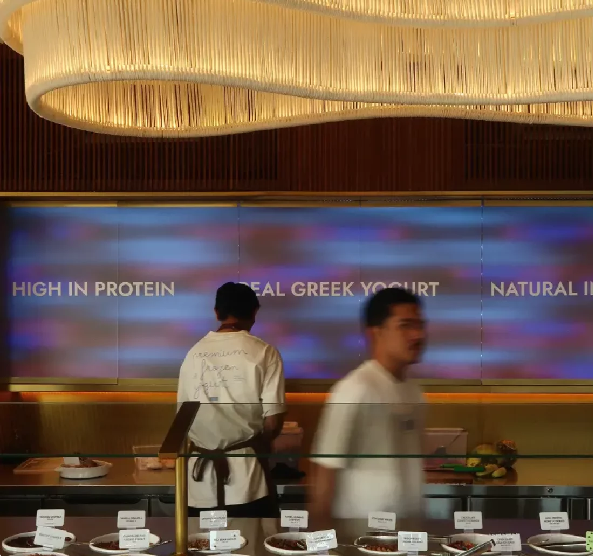

01 Our story
Your day,
a little softer.
Take a seat. Take your time. A visit to MIYO is a little invitation to slow down, make your own cup and enjoy the moment you’re in.
Here in Pererenan, there’s room for a catch-up, a quiet pause, or one more spoonful before you head home. Come as you are. Make it yours.
See you at MIYO.